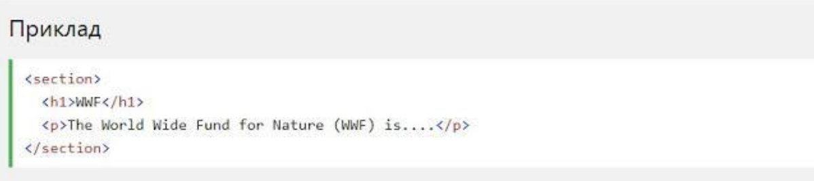
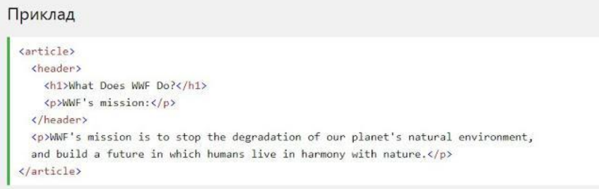
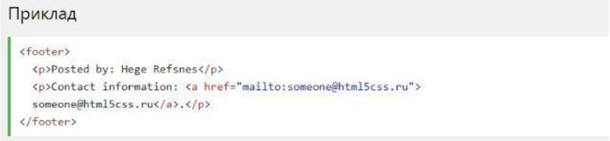

HTML5 Семантичні елементи
Семантичний елемент чітко описує його значення як для браузера, так i для розробника.
Приклади
Приклади
Підтримка браузерів
Семантичні елементи HTML5 підтримуються у всіх сучасних браузерах. Крім того, ви можете "навчити" старих браузерів, як обробляти "невідомі елементи". Прочитайте про це в підтримці браузера HTML5 .
Нові семантичні елементи в HTML5
HTML5 пропонує нові семантичні елементи для визначення різних частин веб-сторінки:
- <section>
- <article>
- <header>
- <footer>
HTML5 <section> елемент
Елемент <section> визначає розділ в документі. Згідно з документацією в3к'с HTML5: "розділ представляє собою тематичну угруповання контенту, зазвичай з заголовком". Домашня сторінка зазвичай може бути розділена на розділи для ознайомлення, змісту і контактної інформації.
HTML5 <article> елемент
Елемент <article> визначає незалежний, автономний вміст. Стаття повинна мати сенс самостійно, і вона повинна мати можливість читати його незалежно від іншої частини веб-сайту. Приклади того, де можна використовувати елемент <article>:
- Повідомлення на форумі
- Блозі
- Газетна стаття
HTML5 <header> елемент
Елемент <header> задає заголовок для документа або розділу. Елемент <header> повинен використовуватися в якості контейнера для вступного змісту. В одному документі може бути кілька елементів <header>. У наступному прикладі визначається заголовок для статті:
HTML5 <footer> елемент
Елемент <footer> вказує нижній колонтитул для документа або розділу. Нижній колонтитул зазвичай містить автора документа, інформацію про авторське право, посилання на умови використання, контактні дані і т.д. В одному документі може бути кілька елементів <footer>.
